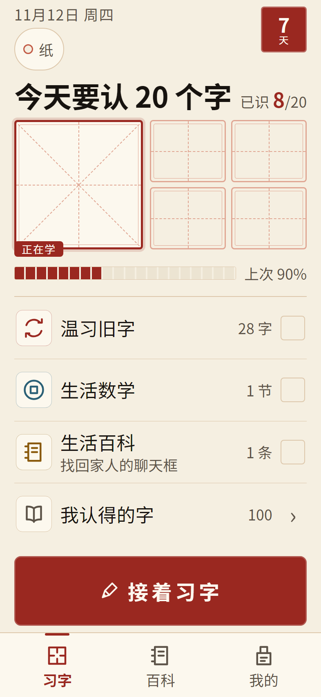
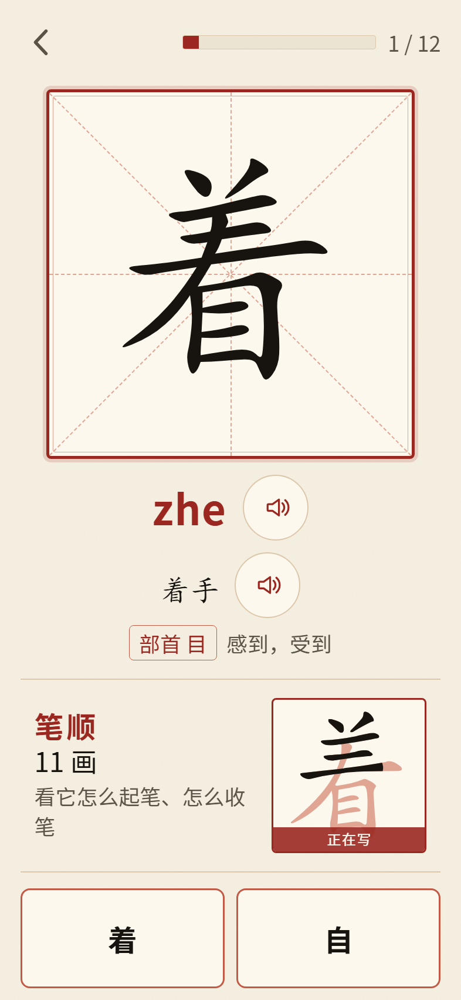
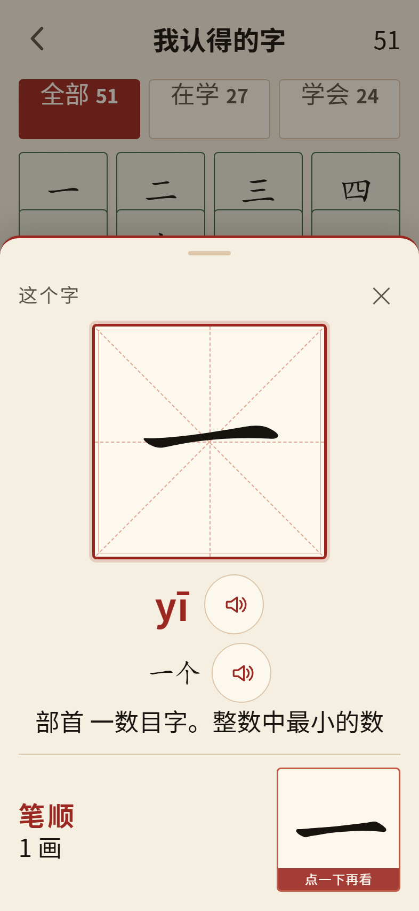
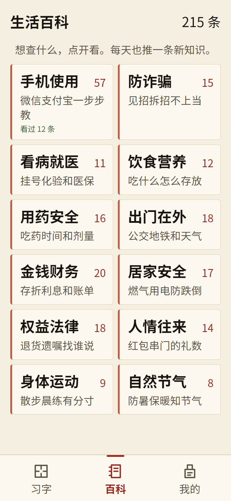
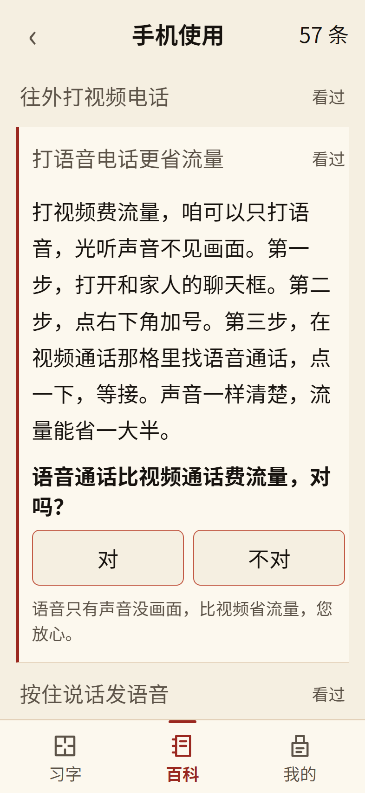
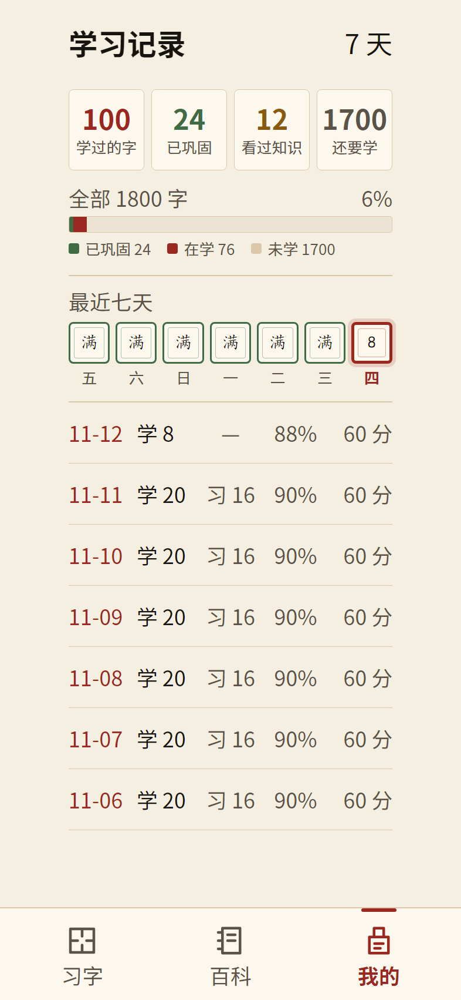
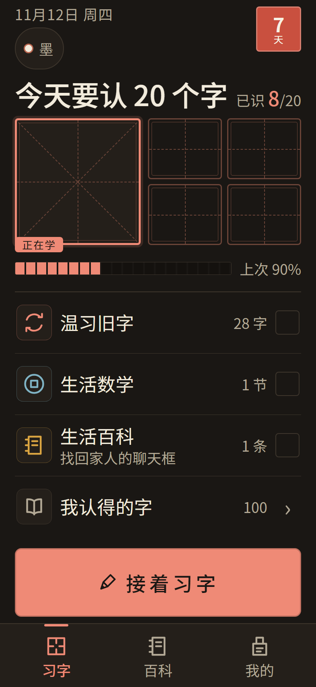

首页

改造前：标题「今天开始学」+ 进度环 + 四条通用列表，
汉字只有 5 个小字；主按钮被 TabBar 切掉只剩一条边。

改造后：朱砂格占主角位 —— 当前字大米字格、
待学的字淡朱（描红引导）；右上角方印记连续天数；任务用界栏分栏。
左：您判为垃圾的那版（通用列表 + 暗底琥珀 + 卡片）。右：新版「描红」——版面来自描红习字本。
新版每一屏都能核到实测数据：对比度 22/22 达标、无内容落在折叠线以下、运行时错误 0。







说明：几何、对比度、音频与内容完整性均为脚本实测；截图由我在 393×851 视口渲染， 但执行环境当前不声明图像输入，主观观感仍需您在真机上看。 您要是觉得哪里还不对，说具体哪一屏哪个位置，我照改。